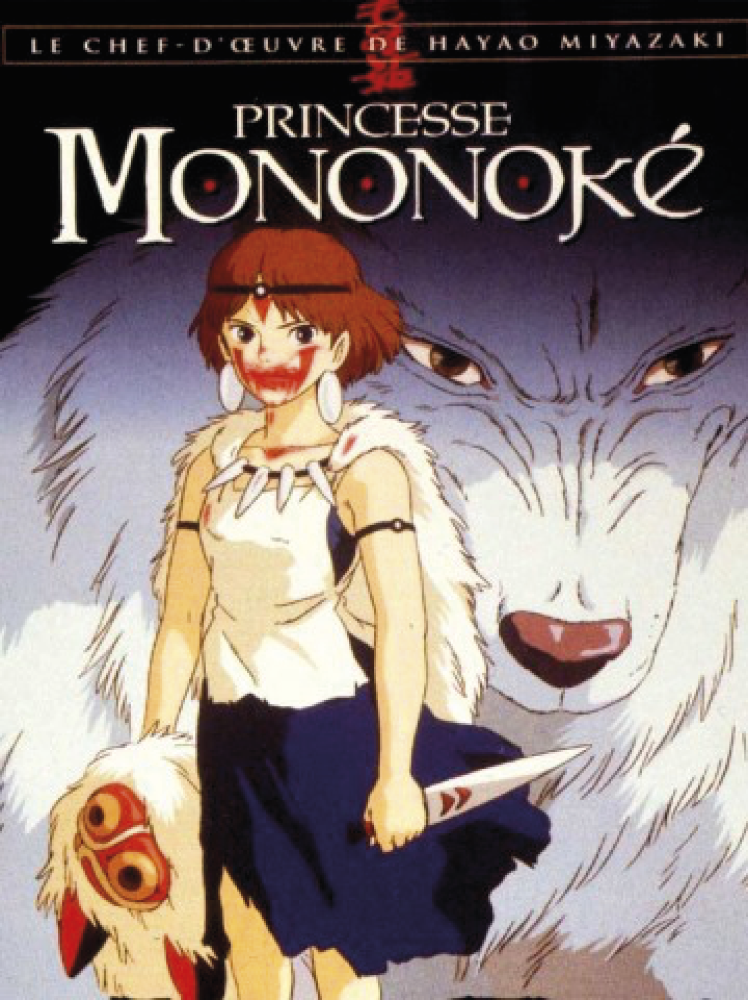

Synopsis
Le film parle d'un jeune guerrier japonais, Ashitaka. Son village se fait attaquer par un sanglier géant et furieux. Il affronte la bête et la tue, mais Ashitaka se retrouve avec une malédiction qui le consumera petit à petit, Il part en voyage à la recherche de ce qui a transformé l'animal en démon en espérant trouver un moyen de guérir sa malédiction. Sur son chemin il rencontre San, connue sous le nom de Princesse Mononoké, la fille qui vit avec des loups. Ashitaka apprend que les humains sont la sources de tout c'est apparitions de démons car ils détruisent la forêt qu'uls exploitent pour leurs forges.

Hayao Miyazaki est un réalisateur japonais qui a crée de nombreux films dont, " La Princesse Mononoké". Mais il est également animateur, écrivain et mangaka.
Autre films connues

Ponyo sur la falaise

Le voyage de Chihiro
Mon voisin Totoro
"Ashitaka and San" :
Jo Hisaishi a composé toutes les musiques du film Princesse Mononoké, il s'agit de la sixième collaboration entre le réalisateur et le compositeur. En 2000, plusieurs albums sont sortie comtenant les 33 pistes du film. Le style de musique se rapproche des musique de films et d'orchestre.
Autres musiques
- Requiem
- Requiem II
- The Forest Of The Gods
- San And Ashitaka In The Forest Of The Deer God
- The Demon God
- The Demon God II
- The Demon God III
- Will To Live
- Lady Eboshi
- Kodamas
- The Legend Of Ashitaka Theme
- The Battle Drums
- Princesse Mononoké Theme Song
- The Battle In Front Of The Ironwork
- The Encouter
- The Retreat
- The Furies
- Adagio Of Life And Death
- Adagio Of Life And Death II
- The Demon Power
- The Demon Power II
- The Tatara Woman Work Song
- The Legend Of Ashitaka
- The Yong Man From The East
- The Land Of The Impure
- The Journey To The West
- The World Of The Dead